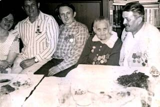

У 1943 році, коли Перший Бородянський партизанський загін під командуванням В.П. Данилюка перейшов з Луб’янських лісів до околиць Катюжанки, загони злилися в один і партизани активізували свою діяльність.
Тим часом Червона Армія наступала, а перед загоном ставилися все складніші завдання: виведення з ладу мостів, залізниць, перехоплення обозів з награбованим у населення майном.
А 6 листопада разом із жителями села партизани щиро раділи за визволене село, оплакували загиблих товаришів і друзів.
А далі – польовий військкомат призвав Олега Бурдія до діючої армії. З боями пройшов Україну, визволяв країни Європи. Під Будапештом був тяжко поранений – роздроблена кістка ноги. Майже рік у Єревані у госпіталі з уламків кісток складали ногу, але вона стала коротшою на шість сантиметрів. Після війни Олег Юрійович соромився оформляти інвалідність, але фронтові рани давали про себе знати все частіше і частіше. Він звернувся до лікарів, але бюрократи від медицини інвалідності не визнавали: щоб оформити явну інвалідність, потрібно, щоб нога була коротша не на 6, а на 7 сантиметрів, або заплатити великі гроші. Це було вище його самолюбства і до останніх днів свого життя Олег Юрійович залишився вірним своїм принципам. Так і не домігся справедливості солдат і партизан Великої Вітчизняної війни. Помер ветеран у 1987 році.
Першого травня 1943 року був створений Димерський партизанський загін, командиром якого був П.Г. Чернишов, комісаром – Ф.А. Клоповський.
У березні 1943 року передові загони С.А. Ковпака, здійснюючи рейд із Рівненської в Київську область, розсіяли і знищили 120-й батальон польової жандармерії, а в результаті диверсії був виведений з ладу на 20 діб міст через Здвиж біля Катюжанки. Командував цією операцією Павло Степанович П’ятишкін.
Зі спогадів Василя Прокоповича Антоненка.
Пізно вночі до нього в хату, яка стояла на околиці села, хтось тихо постукав. Це була партизанська розвідка. Партизани поспішали і попросили провести їх до мосту через річку Здвиж. Швидко зібравшись, Антоненко провів загін до річки, а сам повернувся додому. Незабаром він почув шалену стрілянину. Це партизани, розділившись на три групи з трьох сторін рвонулись до мосту, який для німців мав велике стратегічне значення. Незабаром пролунав вибух. Міст злетів у повітря, а партизани, виконавши бойове завдання, повернулися на базу.
Діяла на території Димерського району і підпільна група, якою керував Г.С. Скотаренко. У серпні 1943 року група злилась з Першим Бородянським партизанським загоном. Активну бойову діяльність у травні 1943 року розгорнув партизанський загін під командуванням А.Ф. Мошко. Його ядро складала виділена із загону група під командуванням С.Л. Лишевського. У боях з ворогом партизани вбили і поранили близько 200 ворожих солдат, офіцерів, зрадників. Знищили 12 автомашин, 2 бронемашини, спалили лісопильний завод, що виробляв продукцію для німців.
Перший Бородянський загін входив у Київське з’єднання і базувався у Луб’янському лісі, неподалік від сіл Здвижівки і Савенки. У серпні 1943 року загін одержав завдання командування з’єднання перебазуватись на північ Катюжанського лісу, де велися жорстокі бої з противником нашими регулярними військами.
На нараді командно-політичного складу загону був розроблений план операції. Партизанська розвідка зібрала дані про оборону ворога в районі ГостомельМостище-Раківка-Гаврилівка-Синяк-Тарасівщина. 24 вересня 1943 року розвідка доповіла, що в напрямку Лютежа по лісовій дорозі рухається німецька частина з великим обозом. Партизани вирішили відбити обоз і повернути населенню награбоване майно. В умовленому місці було влаштовано засідку і, як тільки обоз порівнявся з партизанами, було відкрито вогонь. Фашисти і поліцаї, що супроводжували обоз, залягли. Розпочалася жорстока перестрілка. На жаль, у розпалі бою партизани не помітили, що самі попали в оточення есесівської частини, яка рухалась за 1,5-2 кілометри позаду обозу. На пагорбку німці влаштували кулеметне гніздо і відкрили шалений вогонь по партизанах, які змушені були залягти. Кільце німців поступово звужувалось. Розгром загону був неминучим. Потрібно було за будь-яку ціну знищити прислугу з кулеметом.
Відважний партизан Володимир Морозюк, який заліг за великою сосною вирішив це зробити, аби врятувати загін. Прикинувши відстань до кулеметників, він зрозумів, що граната не долетить. Тоді перебіжками Володимир став наближатись до німців, щоб досягти відстані польоту гранати. Фашисти помітили юнака і відкрили по ньому вогонь.
Біль пронизав тіло воїна і він впав поранений. Стікаючи кров’ю, партизан продовжував повзти до кулеметного гнізда, намагаючись дістатися до нього з тилу. Вибиваючись з останніх сил, Володя підповз близько до німців. Але сили кинути гранату вже не було. І тоді партизан з гранатами в руках кинувся на фашистів. Пролунав вибух. Кулемет разом з німцями був знищений, але і сам юнак загинув, фактично повторивши подвиг відомого героя Олександра Матросова.
Володимир був родом з багатодітної сім’ї, яка проживала в селі Савенка Димерського району. Його батько, Василь Миронович – учасник Першої світової війни. До Великої Вітчизняної війни був головою колгоспу і головою сільської ради. Добровольцем пішов на фронт, приймав участь у Сталінградській битві. Був 14 разів поранений і в 1947 році помер від ран.
Мама – Олена Петрівна, працювала в місцевому колгоспі, а в роки війни допомагала партизанам: шила одяг, лікувала поранених, прала білизну. Нагоро джена багатьма медалями. Померла в 1979 році.
У сім’ї було 10 дітей. Найстарший із них, Володимир, 1920 року народження. Він та його брати Віктор, Валентин та 12-річний Валерій були в Першому Бородянському партизанському загоні з початку його заснування. Володя Морозюк в 1941 році закінчив Катюжанську середню школу. Був добрим, жалісливим, не терпів насильства. Любив займатися радіосправою, конструюванням.
У 1941 році у селі Савенка з’явився оточенець Олександр Назарович Бедських. Оселився в селі і Володимир потягнувся душею до цієї людини В 1942 році юнаки створили підпільну групу, яка пізніше увійшла до Бородянського партизанського загону. В. Морозюк, який здійснив безсмертний подвиг, так і не був удостоєний ніякої нагороди. Сміливим і відважним був і його брат Валерій, який був у загоні зв’язковим. Часто ходив з донесенням у Бородянку, де діяла підпільна організація, вивідував сторожові пости німців та поліцаїв.
З книги «Непокоренная земля Киевская».
«14 вересня партизанський зв’язковий із села Савенка 13-річний Валерій Морозюк передав у штаб загону повідомлення про те, що гітлерівці збираються відправити в Німеччину обоз із 20 возів з хлібом. Заховавшись у засідці, партизани відкрили вогонь по охороні і захопили обоз. Врятований хліб вони роздали жителям сіл Абрамівка, Лубянка, Савенка».
А ось що згадує сам Валерій Васильович Морозюк. «У безтурботній посмішці, ховаючи недитяче своє хвилювання, розумів – ходжу поряд зі смертю. Партизанським зв’язківцем, розвідником легше було мені, бо дорослі частіше потрапляли до рук гестапо.
Згадую, йшов у Бородянку, за 20 кілометрів від нашого села. Був третій рік війни. Фашисти лютували, обшукували на дорозі кожного. Що робити? Знайдуть шифровку – вірна смерть і мені, і близьким. Придумав спосіб. Та такий, що коли приніс донесення до своїх, ніхто не міг відшукати його. Роздягли і роззули, торкалися кожного клаптика, а все дарма. Лише потім командиру я показав, як згорнутий гілочкою аркушик, наче голка проткнув ніжку гриба-мухомора і зник у його м’якоті. Командир навіть по лобі себе вдарив від здивування. Звичайні гриби німці могли б забрати, а мухомор викинули б у найгіршому випадку. Кому він потрібен?
Або ось розквартирувався якось у Савенках ворожий підрозділ. Місцевих фашисти вигнали жити в хліви, позаймали хати. Примушували дідів та підлітків доглядати коней, мити машини. Працював у них і мій старший брат Віктор. Тричі на день я приносив йому їжу, а Віктор «навантажував» порожній посуд патронами і гранатами, які мати переправляла партизанам. Вона була зв’язківцем, як і брати Віктор і Валентин. Потім і я до них приєднався».
У навколишніх лісах ще багато могил, де поховані і партизани і невідомі воїни-визволителі. Уже декілька разів відбувалось урочисте перезахоронення останків відважних бійців до Братської могили. І серед них – Олександр Шефатов, який загинув у 1943 році.
с. Катюжанка